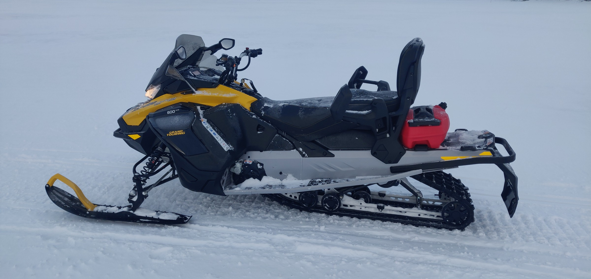
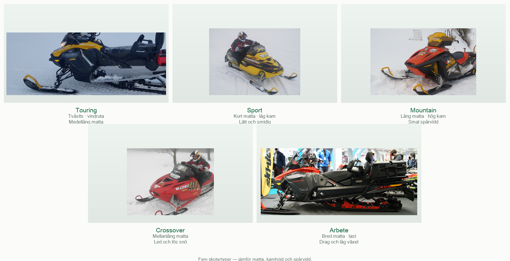
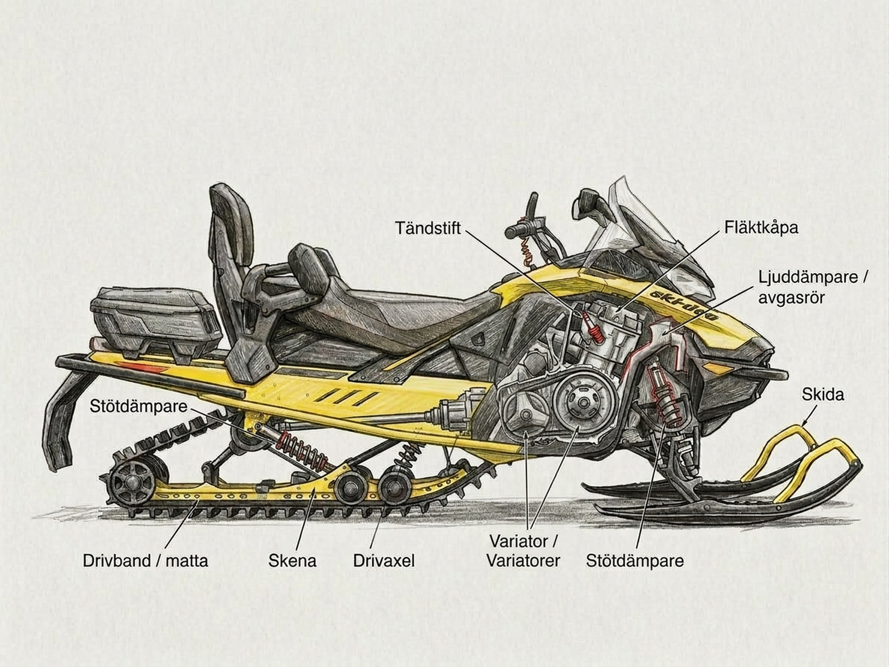
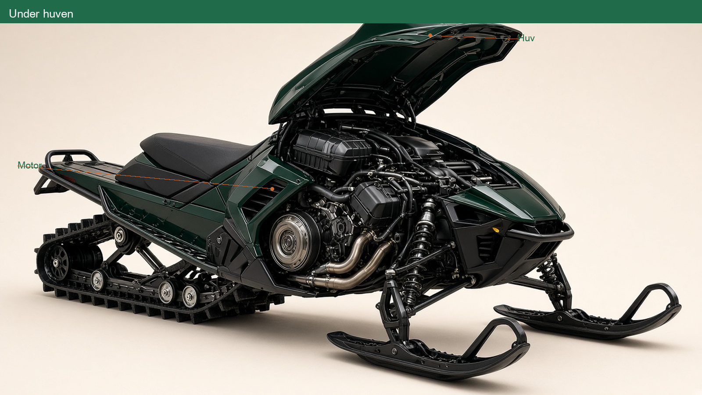
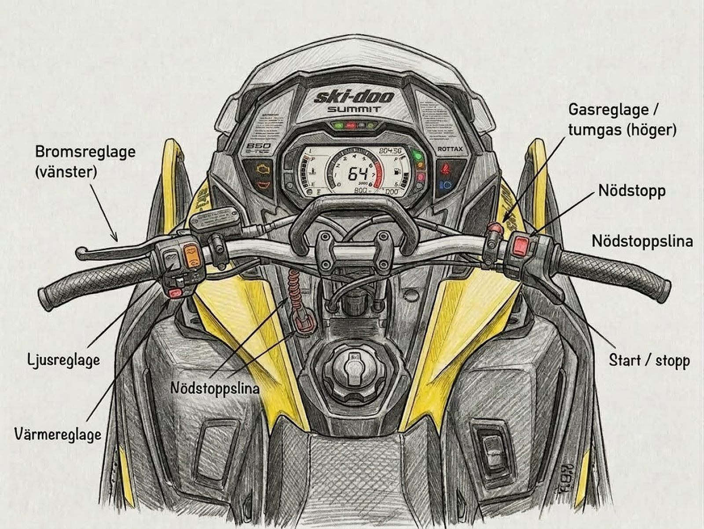
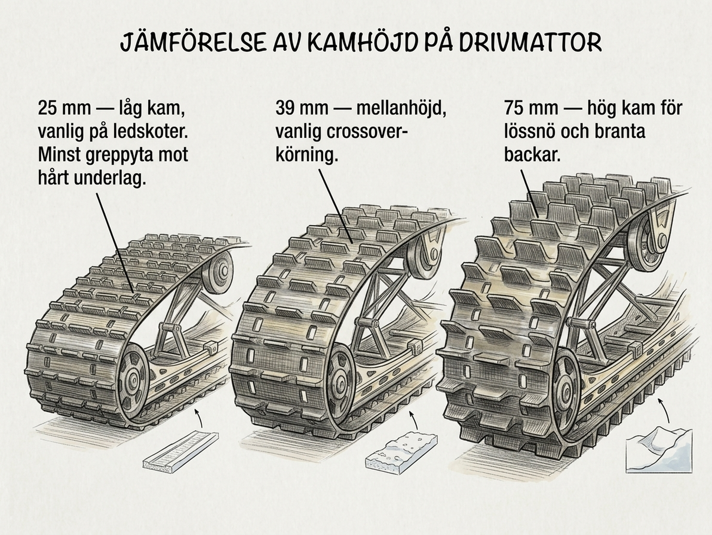

Utbildningsmaterial

Instruktörsverket AB Tänndalen
Det här är kursboken för förarbevis snöskoter. Du har den med under teorin och praktiken. När kunskapsprovet börjar lägger du undan den.
Utbildningen ska ge dig kunskap, färdighet och attityd så att du kör med gott omdöme mot människor, fordon, natur och säkerhet.
| Pass | Innehåll | Kapitel |
|---|---|---|
| Förmiddag | Fordon, miljö, regler, försäkring | 1–4 |
| Eftermiddag | Säkerhet, människan, olyckor | 5–7 |
| Körgård | Praktisk körning | 8 |
| Avslut | Kunskapsprov inför examinator | — |
Läs det kapitel ni tar upp. Skyltar och checklistor är till för att slå upp.
Du ska ha fyllt 16 år för att skriva kunskapsprovet. Den praktiska körningen får du börja med från 15 år och 9 månader, men bara under utbildningen.
God fordonskännedom gör det lättare att upptäcka fel före start och att hantera skotern säkert under körning. Kapitlet behandlar skotertyper, reglage, drivmatta, skyddsutrustning, last och kontroll före körning.
Efter kapitlet ska du kunna:
En snöskoter är juridiskt en terrängskoter — ett terrängmotorfordon med en tjänstevikt på högst 450 kilogram — som är avsedd för färd på snötäckt mark och försedd med band och medar. Konstruktionen varierar beroende på om skotern främst är avsedd för led, lössnö, fjäll eller arbete.
Touring är byggd för bekväm ledkörning och har ofta plats för passagerare och packning.
Sport är vanligen lätt och kvick, med egenskaper anpassade för aktiv körning på led.
Mountain är byggd för djup lössnö. Den har normalt lång matta, höga kammar och smalare spårvidd än en ledskoter.
Crossover kombinerar egenskaper för led och lösare snö.
Arbetsskoter har ofta bred eller lång matta, låg utväxling och god dragförmåga för exempelvis släde, skogsarbete eller ledpreparering.
Skotern ska väljas efter underlag, last och uppgift. En utpräglad lössnömatta kan få hög belastning och stort slitage på hård led, medan en kortare matta med låga kammar ger sämre bärighet i djup snö.

Fram sitter styrskidorna. Under skidorna finns styrstål, som ger styrgrepp på hård snö och is. Huven täcker motorrummet.
På styret sitter normalt gasreglage, bromsreglage, nödstopp, ljusreglage och värmereglage. Fotstöden ger stöd när föraren sitter, står eller flyttar kroppsvikten.
Bakom sätet finns tunneln. Under den arbetar bakfjädringen och drivmattan. Längst bak finns baklyse och ofta fästen för last eller släde.

Kylsystemet skiljer sig mellan modeller. Många vätskekylda skotrar har värmeväxlare i tunneln och behöver snö som drivmattan kastar upp för effektiv kylning. Fläktkylda modeller fungerar på ett annat sätt. Låg snömängd, blankis eller hårdpackat underlag kan därför ge överhettning eller ökat slitage på vissa modeller. Följ temperaturindikering och instruktionsbok; stanna och undersök orsaken vid varning.
Skidornas inställning ska kontrolleras enligt tillverkarens mått. En skida som står tydligt snett, onormalt styrmotstånd eller slag i styret kan tyda på fel som ska åtgärdas före körning.
Under huven kontrollerar du enligt instruktionsboken bland annat olja, kylvätska och att inga ledningar, skydd eller kåpor är lösa eller skadade.

På förarplatsen ska du kunna hitta och använda:
Gasreglaget sitter normalt vid höger handtag. När det släpps ska det återgå snabbt och fullständigt till tomgångsläget. Kör inte om reglaget går trögt eller fastnar.
Bromsreglaget sitter oftast vid vänster handtag. Bromsen ska ta tydligt och utan onormalt lång reglageväg.
Före start ska nödstoppslinan vara rätt ansluten, gasreglaget helt släppt och området framför och bakom skotern fritt.

Nödstoppslinan fästs i föraren enligt tillverkarens anvisning. Om föraren faller av dras kontakten loss och motorn stängs av. Drivningen upphör, men skotern kan fortsätta rulla eller glida en sträcka beroende på fart, lutning och underlag. Linan är inte ett säkerhetsbälte.
Nödstoppet stänger också av motorn och ska vara lätt att nå.
Om gasreglaget fastnar under körning:
Försök inte hålla emot full motorkraft enbart med bromsen. Om gasreglaget kärvar vid kontrollen före start ska skotern inte användas förrän felet är avhjälpt.
Den största risken när gasreglaget kärvar är att snöskotern skenar okontrollerat.
Drivmattans kammar överför motorkraften till underlaget. Greppet beror inte bara på kamhöjden. Mattans längd och bredd avgör kontaktytan och därmed bärigheten, och snötyp, last och skoterns vikt påverkar framkomligheten.
Kamhöjden anges i millimeter, ofta också i tum eftersom mattorna tillverkas efter amerikanska mått. Mattillverkarna delar in dem ungefär så här:
Tumregeln från tillverkarna är: kör du mer än hälften av tiden på led ska du välja den lägre kamhöjden. Följ alltid skoter- och mattillverkarens gränser för kamhöjd och hastighet, och kontrollera att en högre kam får plats i tunneln.

Slirskydd, exempelvis fabriksmonterade greppinsatser eller dubb, kan förbättra acceleration och bromsning på is och hårdpackad snö. De förändrar samtidigt skoterns styrning och belastningen på drivmattan.
Montera endast en lösning som är godkänd eller rekommenderad för den aktuella skotern och mattan. Kontrollera frigång mot tunnel, kylare och andra delar samt om tunnelskydd krävs. Fel längd, antal eller placering kan skada mattan eller skotern. Kontrollera även lokala regler och ledägarens villkor. På barmark och andra känsliga ytor kan slirskydd orsaka skada; sådan körning ska undvikas.
Isrivare är en annan utrustning. De river upp snö och is som kan kyla värmeväxlare och smörja slides på hårt underlag. Användning och begränsningar, bland annat vid backning, framgår av skoterns eller utrustningens instruktioner.
Skotern överför motorkraften genom ett variatorsystem med primärvariator, sekundärvariator och variatorrem. Systemet ändrar utväxlingen steglöst.
Variatorremmen är en slitdel. Felaktig belastning, slirning eller fel inställning kan skada den. Låt motorn vara avstängd, ta ur nyckeln och följ instruktionsboken vid kontroll eller byte. Variatorskyddet ska vara monterat före start.
På längre turer är extra variatorrem och spade viktig utrustning. Ta även med karta och kompass. GPS eller telefon är ett komplement eftersom batteri och täckning kan svikta.
Förare och passagerare på snöskoter utan karosseri ska använda skyddshjälm. Passagerare under sju år får använda annat lämpligt huvudskydd. Föraren ansvarar för att passagerare under femton år använder föreskrivet huvudskydd.
Hjälmen ska passa, vara rätt knäppt och ge tillräcklig sikt. Visir eller glasögon skyddar mot fartvind, snö och föremål.
Efter hjälmen är ryggskyddet det viktigaste extra skyddet. Vid en vältning eller ett fall bakåt är det ryggen som tar smällen. Rejäla stövlar, handskar och visir eller glasögon hör också till grundutrustningen. Skydden ska passa körningen och får inte hindra rörelser eller reglagehantering.
Fartvinden ökar kroppens värmeförlust. Klä dig därför i flera lager:
Undvik plagg som sitter så hårt att blodcirkulationen eller isoleringen försämras. Skydda särskilt händer, fötter och ansikte. Vita, stela eller känsellösa hudpartier kan vara tecken på kylskada. Sök skydd, byt våta kläder och värm försiktigt; gnugga inte det skadade området och använd inte alkohol som uppvärmning.
Last påverkar tyngdpunkt, bromssträcka och styrförmåga. Följ skoterns, lastbärarens och slädens angivna last- och kultrycksgränser. Placera lasten lågt, fördela den jämnt och surra den så att den inte kan förskjutas, falla av eller nå drivmattan. Lösa bandändar får inte kunna dras in i mattan.
Ta bara med den minsta mängd extra bränsle som behövs för den planerade turen och en rimlig säkerhetsmarginal. Mer bränsle innebär mer vikt och större brand- och läckagerisk.
MSB:s regler för privat transport av brandfarlig vätska sätter de yttre gränserna: högst 60 liter per behållare och högst 240 liter totalt på fordonet. Det är lagens tak, inte en rekommendation. I praktiken är det skoterns lastgräns och vad du kan surra fast säkert som avgör hur mycket du kan ta med.
Använd täta, hela behållare som är avsedda och godkända för bensin. Behållare över fem liter bör vara typgodkända enligt gällande transportregler. Fäst dem upprätt och skyddat från värme, slag och nötning. Tanka med avstängd motor, på säker plats och utan tändkällor. Kontrollera också eventuella villkor från uthyrare, transportör, ledägare eller räddningstjänst.
När skotern transporteras på släpvagn ska den säkras i alla riktningar med avsedda fästpunkter och utrustning med tillräcklig kapacitet. Använd inte delar som kan deformeras, exempelvis plastkåpor eller styre. Kontrollera surrningen efter en kort körsträcka.
Gör kontrollen före varje körning och följ instruktionsboken:
Efter start gör du en provbromsning i låg fart på fri yta.
Kontrollera väder, ledstatus och isinformation. Meddela färdväg och beräknad återkomst till någon som inte deltar i turen. Anpassa reservdelar, spade, första hjälpen, kommunikation och navigationsutrustning efter sträcka och område.
Källor till kapitlet finns i källförteckningen längst bak i boken. Kontrollerade 18 september 2026.